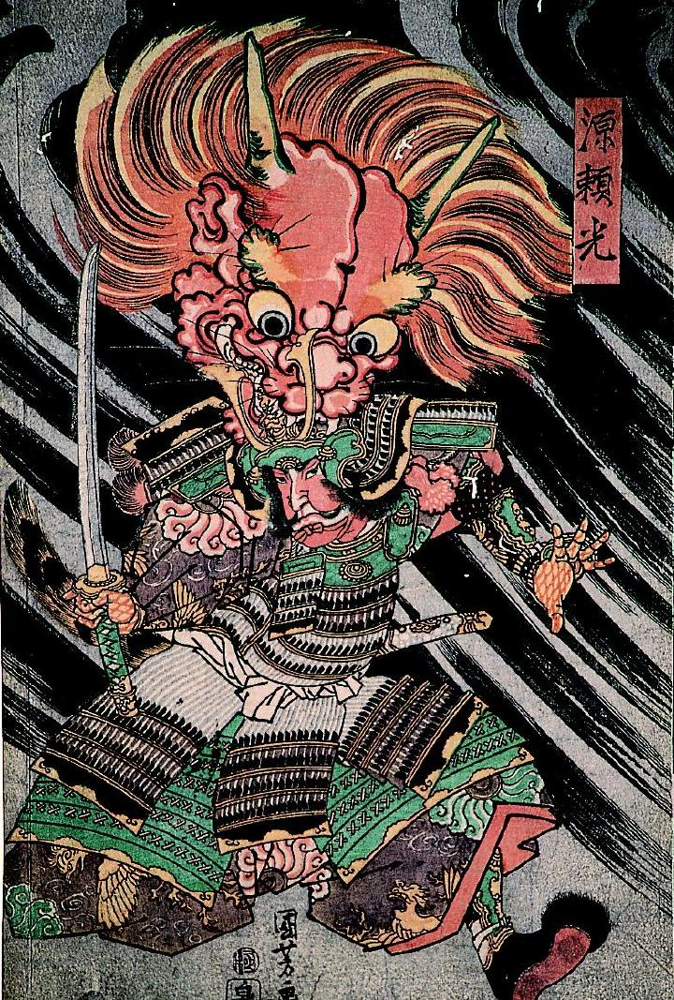

← 图鉴索引

源頼光の頭に、巨大な赤い鬼の首が噛み付いている。
著作者：歌川国芳／出典：親書誌：A5_pushkin_0003：源頼光；ミナモトノライコウ／日付：2011／資源識別子：A5_pushkin_0003_0001_0000
Copyright (c)2010- International Research Center for Japanese Studies, Kyoto, Japan. All rights reserved.